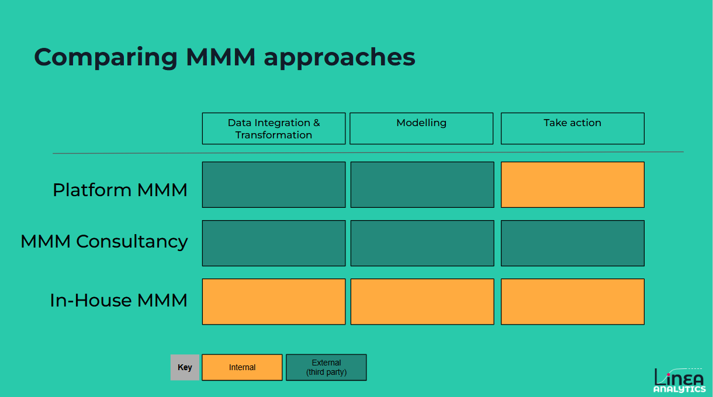

MMM Tools vs. MMM Consultancies vs. In-House MMM: How to Choose the Right Marketing Mix Modeling Set Up?
As marketing complexity grows, the need for a "source of truth" in measurement has never been more critical. Marketing Mix Modelling (MMM) has re-emerged as the gold standard for privacy-safe measurement that accounts for both media and external drivers like seasonality and economic trends.
However, the path to implementation varies significantly.
Whether you are looking for an Always-on MMM solution or a deep-dive strategic review, choosing the right delivery model is the first step to using MMM as a growth tool.
The three ways to implement MMM: Tools vs. Consultancies vs. In House
To understand which Marketing Mix Modelling path to take, we must first define the three primary models:
MMM Tools (SaaS/Software):
Automated platforms that allow brands to ingest data and receive model outputs through a platform. These often promise speed but vary in how much "human" oversight is included.
Typically, these approaches would be run by a third party, where the provider delivers the data integration, transformation and bespoke or tailored modelling capabilities, all covered by the tool. Brands would need to use the reporting dashboard and tools to take action. At Linea, we call this the MMM Platform.
What don’t you get? That’s teams to help you take action.
MMM Consultancies or MMM Agencies (Traditional Service):
Depending on the style of project this could be:
- A build on the MMM tooling that also helps teams take action. The third-party provider goes beyond the data and modelling to ensure that results are used by marketing teams - this is the way we at Linea Analytics provide our Full service MMM
- A project-based approach where external experts build bespoke models and deliver a static report. This is often high-touch but can be slow, with turnaround times varying. Brands might use this as a more strategic tool or one to validate existing measurement.
In-House MMM
Building a dedicated internal data science team to manage measurement using self-built, externally built tools or open-source tools like Robyn or Meridian.
This offers maximum control but requires significant technical infrastructure, expertise for building analysis, and to ensure that action is taken. Some brands consider that the lack of a 3rd party expertise in the process can limit the quality and implementation of MMM.

Why Not All MMM Tools Are the Same
Before we get into the details on what the best approach is and when we should use them. I want to highlight a buyers note:
Not all MMM Tools are the same
There are a variety of so-called automated MMM tools. These include Adobe MMM, Triple Whale, Fospha, amongst others. The challenge for buyers or users of these tools is to ensure that they capture all drivers of sales.
Whilst they may use statistical approaches, they also need to include the following factors:
✅All digital media channels (normally included)
? Offline marketing channels (sometimes included)
❌Long-term impact of media (not typically included)
✅Seasonal factors (often included)
? Impact of external factors e.g. market or economic drivers
❌Price, product & promotional changes
❌Synergy impact between Media drivers & External factors (e.g.promotions)
All too often, models don’t take into account many of these key relationships. This creates lower quality and, most importantly, less action can be taken from your MMM.
How Does Each Approach Compare?
The below table compares at a high level across these different approaches. For comparison we have highlighted how the Linea Full service MMM and Typical MMM consultancies provide different delivery approaches.
| Feature | Linea MMM Platform (tools) | Consultancy led approach | In-House MMM | |
|---|---|---|---|---|
| Linea Full Service MMM | MMM Consultancies | |||
| Speed? | Real Time (or near real time) | Up to 1 month in arrears | 3 month in arrears | 3 months post quarter |
| Bespoke models? | ✅ Built bespoke updated consistently | ✅ | ✅ | ✅ |
| Transparent access to models? | ✅ Subject to scope | ✅ Subject to scope | ? | ✅ |
| Delivery Type | Platform/ Dashboard | Platform + PPT | PPT | PPT |
| Costs | Efficient (Scalable) | Efficient (Less Scalable) | High | Driven by Headcount Cost |
| Actionability | Scenario Tools | Scenario Tools & Analysis | Static Reports & Analysis | Static Reports |
What MMM Approach is Best for Me?
The "best" approach depends on the questions you need to answer:
- "I need to justify last year's spend to the CFO": A one-off or consultancy-led approach is often sufficient for retrospective, one-off reporting.
- "I need to make daily, weekly or monthly budget reallocations across digital and offline": An always-on MMM tool is necessary to provide the "speed to action" required for tactical optimisation.
- "We want to build proprietary measurement IP and have a large data science team": In-house measurement using open-source frameworks is the logical path, provided you can bridge the gap between data science and marketing.
At Linea, we believe that buyers should consider taking a phased approach to measurement. This might include moving from a consultancy-led approach as you set up and deploy your MMM programme to a platform MMM approach as you become a more frequent user. In practice, this might mean the first year of the programme as a Full Service MMM before moving to the Linea Platform in Year 2 and beyond.
What Team Would I Need for Each MMM Set Up?
Your choice of MMM impacts your hiring roadmap:
- MMM Tool: Requires a Performance Marketer or Media Planner who can use the tool's scenario planners to take action from the measurement.
- Consultancy: Requires a strong Marketing Manager to manage the agency relationship and translate findings into media briefs.
- In-House MMM: Requires Data Scientists and Data Engineers to build and maintain the models, plus a "Measurement Translator" to ensure the results make sense to the marketing team.
- This can range from a team of 2/3 people all the way up to a team of 30 people (as I believe is the case at Sky, the telecommunications company)
In Conclusion: What MMM Approach is Best for My Brand?
There is no one-size-fits-all, but the industry is shifting toward always-on MMM models that combine the best of both worlds: Speed and Accuracy.
At Linea Analytics, we have found that many brands struggle with "Free MMM" tools because they often lead to misinterpretations, such as overestimating search or undervaluing mid-funnel activity, due to a lack of marketing context.
Our approach is built for flexibility. We provide the transparency of an in-house build, the strategic depth of a consultancy, and the speed of an automated tool.
By focusing on Marketing Mix Modelling that is faster, more transparent, and built for action, we ensure that your measurement isn't just a report on the past, but a roadmap for growth.